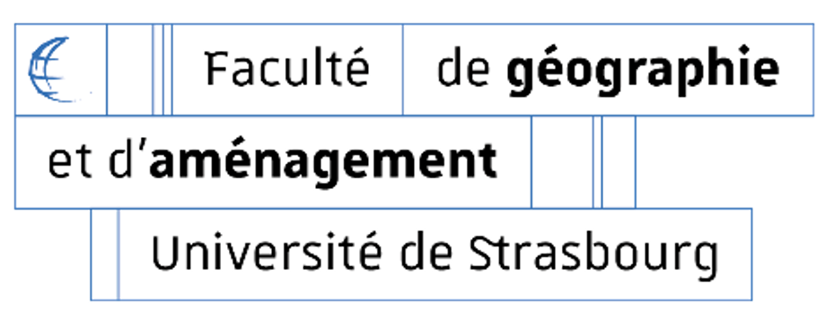
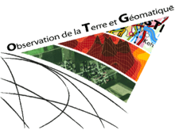
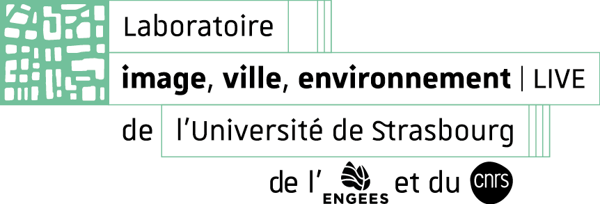
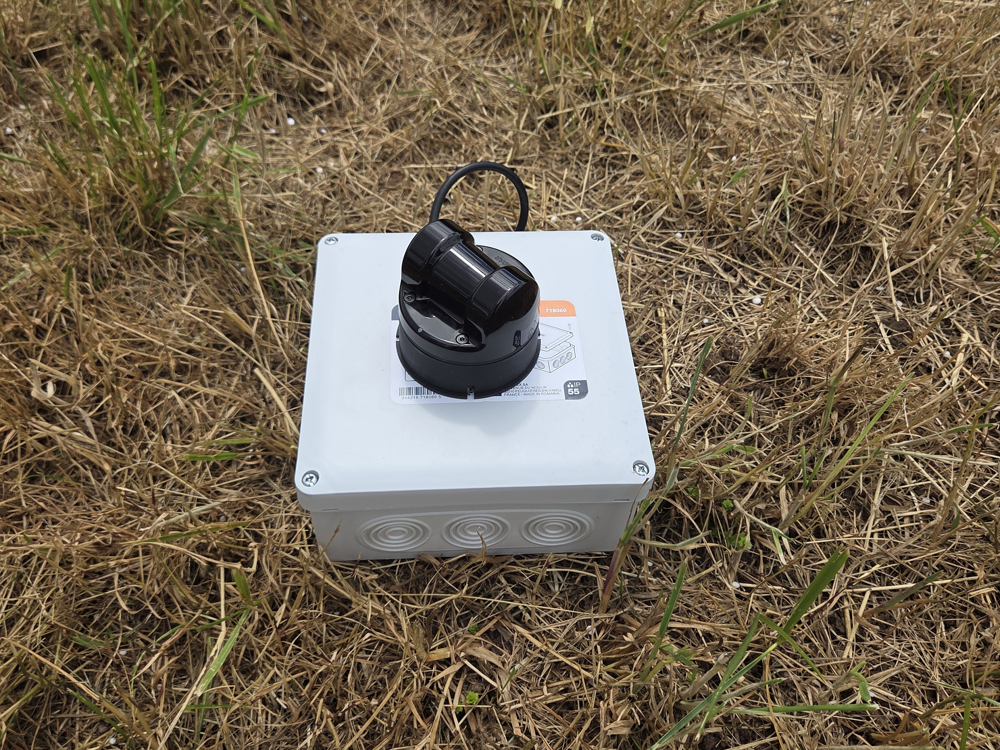
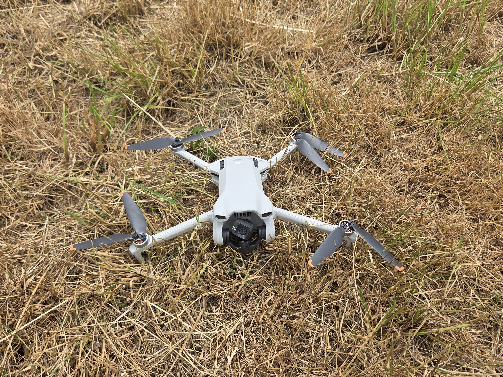
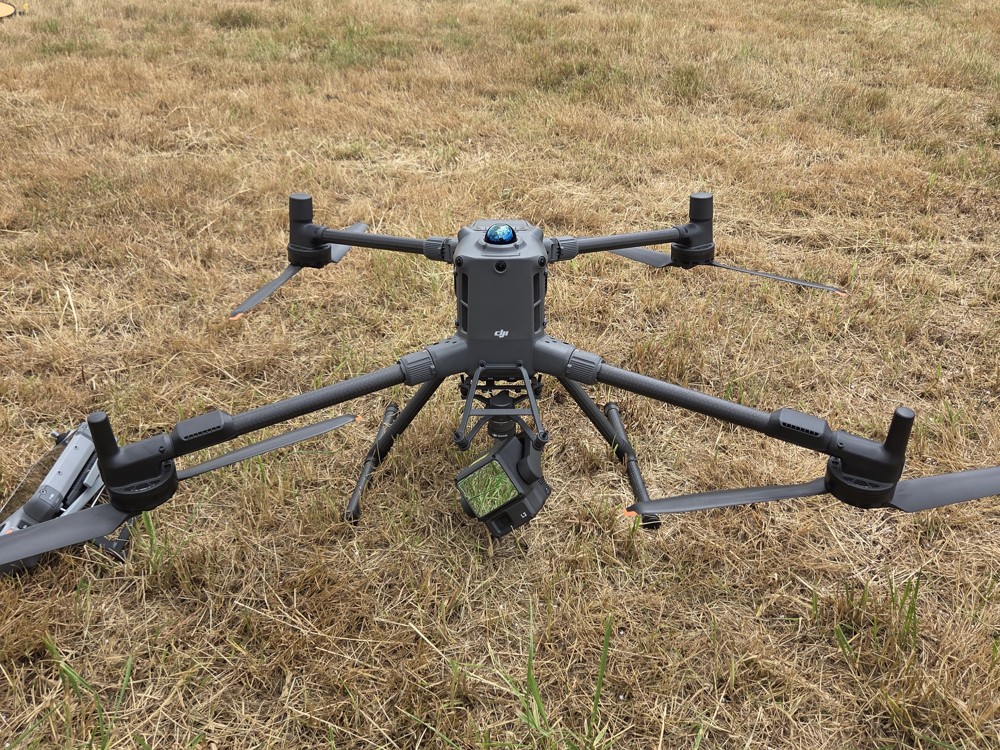

Ce site web est un court résumé de mon mémoire portant sur l'analyse morphologique d'embâcles de la Bruche, une rivière vosgienne aux régimes hydrologiques contrastés. Pour étudier ces embâcles, plusieurs méthodes ont été utilisées, comme le LiDAR aéroporté, la photogrammétrie SfM ou encore un LiDAR portable. Ces différentes méthodes ont été appliquées afin de déterminer des caractéristiques propres aux deux embâcles analysés, et de faire de l'analyse spectrale, afin de dissocier des objets comme les déchets ou les bois morts.

Le LiDAR (Light Detection And Ranging) est une technologie reposant sur l'émission d'impulsions laser et la mesure du temps de retour de l'écho. À partir d'une de ces impulsions laser, un retour fournit une coordonnée tridimensionnelle précise. Le LiDAR Unitree L2 a été utilisé afin de tester l'acquisition à partir d'un capteur d'entrée de gamme.

La photogrammétrie reconstitue une scène en 3D à partir de plusieurs photos acquises sous différents angles. Le but est d'identifier des points d'intérêt communs entre les images, de déterminer la position relative des caméras et de générer un nuage de points colorisés en RGB. Un DJI mini 3 a été utilisé afin de tester l'acquisition à partir d'un capteur d'entrée de gamme.

Sur le Matrice 400, la caméra intégrée au Zenmuse L2 colorise directement le nuage LiDAR en RGB, combinant la précision géométrique du laser à l'information spectrale nécessaire aux filtres de végétation et aux indices spectraux utilisés en aval.
| Capteur | Type | Précision | Avantages | Inconvénients | Coût |
|---|---|---|---|---|---|
| DJI Matrice 400 + Zenmuse L2 |
Drone LiDAR haut de gamme | Centimétrique (RTK) | Précision élevée, colorisation du nuage, couverture homogène, fiabilité | Coût élevé, nécessite un bon calcul des positions initiales | 30 000 € |
| DJI Mini 3 | Drone caméra grand public | Décimétrique à métrique | Léger, facile à utiliser, bon pour les textures et l'éclairage favorable | Précision GPS limitée (monofréquence), qualité dépendante de la scène | 400 € |
| Unitree L2 | LiDAR portable bas de gamme | Dépend du SLAM et du recalage | Rapide, flexible, accès aux zones difficiles (cœur de l'embâcle), abordable | Géoréférencement peu précis, nécessite un recalage avec un nuage de référence | 600 € |
La végétation absorbe fortement le rouge et une partie du bleu par activité chlorophyllienne, ne laissant que le vert être réfléchi. Un seuil est choisi sur l'ortho-image à partir de l'indice ExG, puis appliqué au nuage colorisé pour retirer la majorité de la végétation et l'alléger.
| Indice | Formule | Pourquoi |
|---|---|---|
| ExG | 2G − R − B | Excès de vert, réagit fortement au feuillage |
| VARI | (G−R) / (G+R−B) | Robuste aux variations d'exposition |
| GLI | (2G−R−B) / (2G+R+B) | Normalisé, stable en toutes conditions |
Sans information colorimétrique fiable, le filtre s'appuie sur la géométrie : un MNT est calculé à partir des 5 % de points les plus bas de chaque cellule d'une grille. La hauteur relative de chaque point au MNT est ensuite comparée à un seuil maximal : les points trop hauts sont retirés, en conservant les échos multiples proches du sol pour préserver les berges et petits artefacts.
Après le filtrage de végétation, des points fantômes subsistent : bruit photogrammétrique diffus (reflets, erreurs de reconstruction) ou petits clusters isolés (artefacts, objets flottants). Un nettoyage géométrique en deux étapes les élimine :
Ce nettoyage automatisé évite de traquer à la main les petits clusters et points isolés, parfois invisibles à l'œil.
Aperçu interactif d'un nuage acquis par le DJI Matrice 400 une fois la végétation filtrée et les points indésirables supprimés.
Au-delà du filtrage, plusieurs indices spectraux, calculés à partir du RGB, ou des indices géométriques, ont permis de discriminer bois, eau, sédiment et déchets dans le nuage.
| Indice | Formule | Utilité |
|---|---|---|
| Rouge (R) | canal normalisé [0,1] | Distinguer les tons chauds (bois, sols nus) des autres matériaux |
| Vert (G) | canal normalisé [0,1] | Essentiel pour détecter la végétation (chlorophylle) |
| Bleu (B) | canal normalisé [0,1] | Identifier les matériaux métalliques ou bleutés (déchets, eau) |
| Intensité LiDAR | canal LAS normalisé [0,1] | Réflectance NIR/SWIR, sensible à l'eau, la texture, le matériau |
| ExG | 2G − R − B | Végétation, précision 85-99 % |
| GLI | (2G−R−B)/(2G+R+B) | Cartographie de la végétation, précision > 91 % |
| ExB | 2B − R − G | Matériaux bleutés (déchets, eau) |
| VARI | (G−R)/(G+R−B) | Robuste aux variations d'illumination et d'atmosphère |
| ExR | 1.4R − G | Tons chauds (bois secs, sols nus) |
| R/G | R / G | Distinguer le bois (marron) des autres matériaux |
| B/G | B / G | Matériaux bleutés/métalliques (déchets) |
| Brillance RMS | √((R²+G²+B²)/3) | Luminosité globale, indépendante de la teinte (sédiment, déchets) |
| Rugosité | σ(Z) local, sphère 10-15 cm | Surfaces lisses (eau) vs rugueuses (bois) |
| Normale Z | composante Z (ACP) | Surfaces horizontales (eau, sédiment) vs verticales (tronc, berge) |
Le volume de l'embâcle est estimé par différence entre un MNS calculé sur le nuage (grille + triangulation de Delaunay en 2,5D) et une hauteur d'eau de référence. Simple et rapide, cette approche reste adaptée aux structures géométriquement simples, mais perd en fiabilité sur des formes complexes, un compromis discuté en détail ci-dessous.
Deux leviers permettent de limiter les écarts radiométriques entre vols. D'abord, une calibration en amont à l'aide d'une mire de référence (type ColorChecker), photographiée systématiquement pour recaler chaque vol vers une référence commune. Ensuite, voler dans des conditions d'éclairage comparables d'un vol à l'autre : à plus ou moins deux heures du midi solaire, en privilégiant les journées de voile blanc plutôt que de plein soleil, quitte à accepter une luminosité globale légèrement plus faible.
+40 %de surestimation en photogrammétrie , la reconstruction gère mal les surfaces d'eau, peu texturées et sujettes aux reflets, ce qui place artificiellement la zone aval de l'embâcle plus haute que l'amont. Des points de contrôle au sol (GCP) ramèneraient l'erreur globale du modèle (1,38 m) à quelques centimètres ; un plan de vol plus lent limiterait aussi le flou de mouvement observé sur certains clichés.
−29 %de sous-estimation avec le LiDAR portable Unitree L2, due aux trous dans le nuage liés aux contraintes d'accès du site (kayak, zones difficiles à pied) plutôt qu'à une limite du capteur. L'interpolation des trous (krigeage, pondération inverse à la distance) ou le recours aux alpha-shapes sont des pistes pour réduire ce biais.
Le pas de la grille MNS (0,05 à 0,5 m) influence peu le résultat final : le volume au DJI Matrice 400 se stabilise autour de 220-250 m³, tandis que celui de l'Unitree L2 converge vers la même valeur à mesure que les trous se comblent avec un pas plus grossier , confirmant l'intérêt de ce capteur pour un suivi temporel répété.
| Critère | DJI Matrice 400 | DJI Mini 3 | LiDAR Unitree L2 |
|---|---|---|---|
| Précision volumétrique | Élevée | Surestimation (+40 %) | Sous-estimation (−29 % sans interpolation) |
| Coût de déploiement | Élevé | Faible | Faible |
| Contraintes réglementaires | Fortes (vol drone) | Moyennes (petit drone) | Faibles |
| Usage recommandé | Caractérisation ponctuelle précise | Estimation rapide et indicative | Suivi temporel répété |